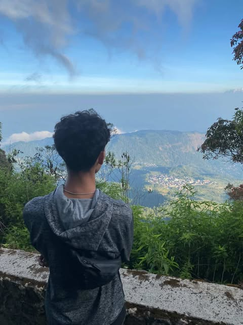

Web Developer | UI/UX Designer | Freelancer
Saya adalah Mahasiswa Informatika di Universitas Ahmad Dahlan dengan minat yang besar dalam bidang pengembangan web dan desain antarmuka pengguna (UI/UX). Saya memiliki ketertarikan terhadap teknologi terbaru, serta semangat untuk terus belajar dan berkembang di dunia digital. Saya aktif mengerjakan proyek pribadi dan freelance yang berfokus pada pembuatan website responsif, interaktif, dan berorientasi pada pengalaman pengguna. Selain itu, saya senang berkolaborasi dalam tim serta terbiasa bekerja dengan tools modern seperti Figma, React, dan berbagai teknologi front-end.
Email: ilhamnurkholis2018@gmail.com
WhatsApp: +62 82296175022
Instagram: @ilhamnurkholiss